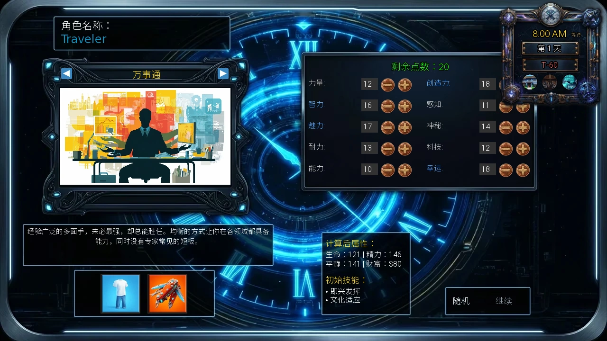
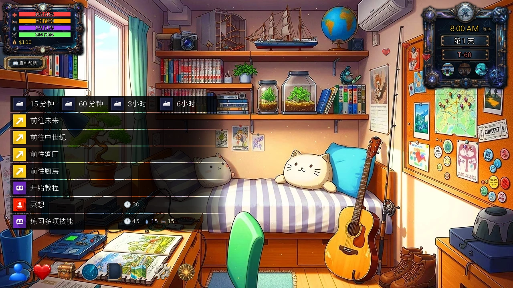
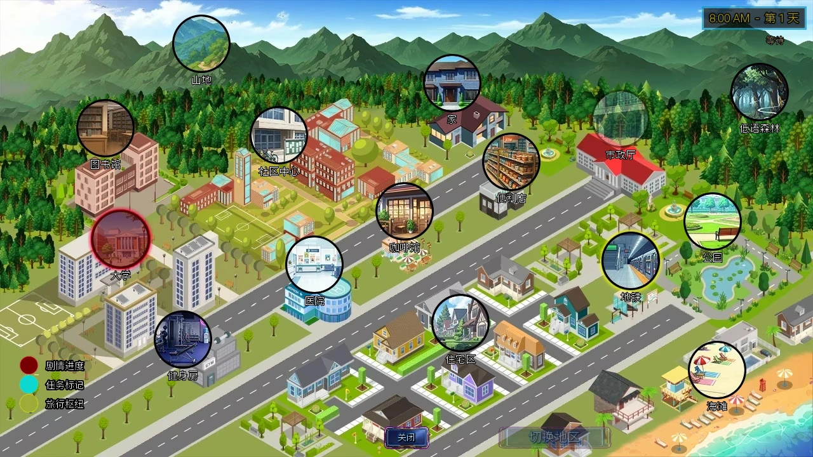
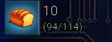
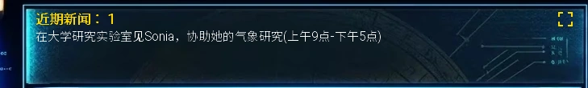
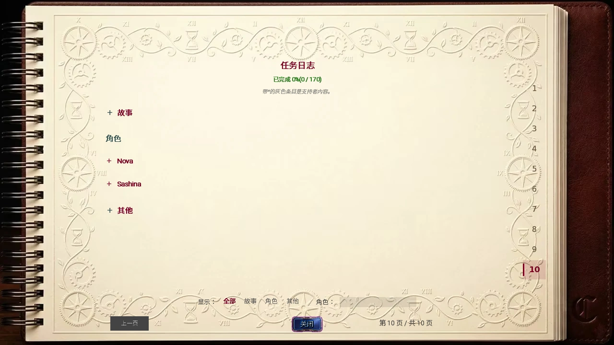
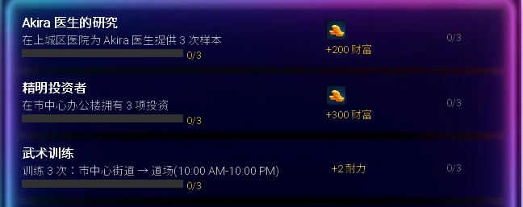
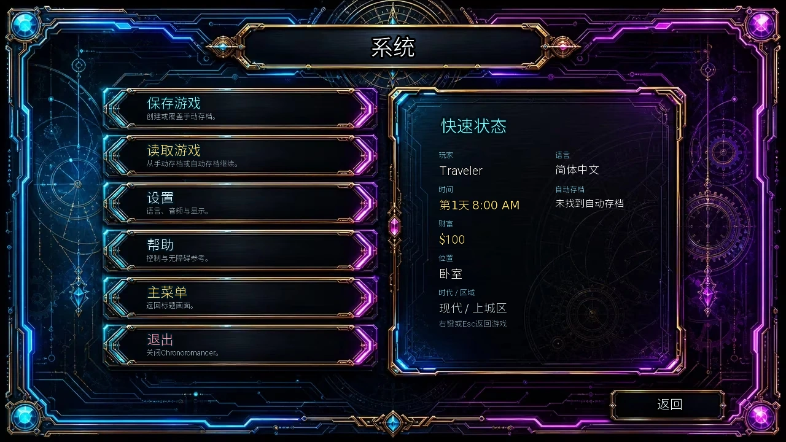
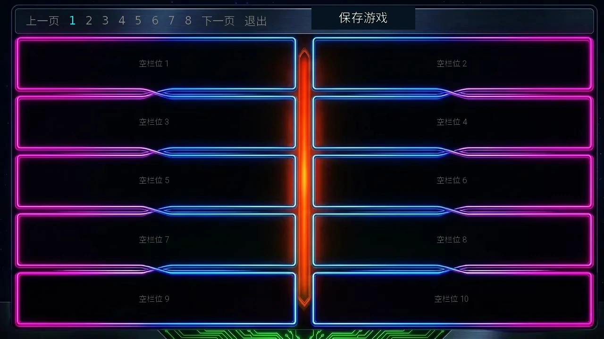

Select any screenshot to view the full game screen. Example values vary with proficiency, attributes, and progress.
Your first session
- Choose a proficiency, enter a name, and spend all 20 attribute points.
- Select START TUTORIAL in your bedroom to meet Katie.
- Find the status panel, clock, and bottom toolbar.
- Check Communications and the Quest Log for your next objective.
- Open the cog icon and make a manual save.
You do not need to learn every system on day one. Start by finding your way, recovering, checking objectives, and saving progress.
Create your character
Your proficiency sets the emphasis of your starting attributes, skills, and equipment. It also changes your bedroom and its practice activity. You can continue training attributes and learning skills later.
- Enter a character name. It cannot be blank.
- Choose a proficiency with the arrows. Read its description and starting skills before distributing points.
- Spend all 20 points. Continue requires a valid name and zero points remaining. Changing proficiency resets your allocation, so choose it first.
- Choose whether to play the prologue. A first playthrough benefits from the full introduction; skipping takes you directly into ordinary exploration.

| Proficiency | Starting direction | Keep in mind |
|---|---|---|
| Jack of All Trades | Try several activities before specializing. | No major weakness or dominant main attribute. |
| Scholar | Research, learning, puzzles, and Intelligence-based activities. | Low Strength; prepare equipment and recovery for early combat. |
| Athlete | Start with strong Stamina and Strength for physical activities. | Technology-related requirements still need attention. |
There is no required opening build. Stamina increases your Energy capacity, while other attributes help with different activities. Put points toward something you actually want to try.
Start in your bedroom
- Select START TUTORIAL. This begins Katie's introduction. It is separate from the star-shaped Tutorial Quests panel, which offers a set of longer-term introductory goals and rewards.
- Find the recovery strip. The four options are 15 min, 60 min, 3 hrs, and 6 hrs.
- Explore home. Go to Living Room and Go to Kitchen lead to other rooms. Cooking requires the appropriate ingredients and conditions.
- Open the map when ready. Start with familiar Present Uptown destinations before trying to schedule visits across all three eras.

To begin the story, visit Sonia at the university during opening hours. You can also start with tutorials, training, or a job you already qualify for.
Read the interface
Status and time
The top-left meters show Health, Energy, Calm, and Satiation, followed by Wealth. Read the icons and current/maximum values rather than relying only on color.
Stamina is an attribute; Energy is a resource. Training Stamina can increase maximum Energy. Rest and consumables restore the Energy you spend.
The top-right panel shows the time, current game day, and remaining doomsday days. T-60 means 60 game days remain. That allowance can be extended. Ordinary exploration advances time through actions, travel, waiting, and rest; you can take time to read instructions and menus.
The bottom toolbar
- Blue person · Character
- Attributes, skills, and growth.
- Heart · Relationships
- Progress with characters you have met.
- Chest · Inventory
- Equipment, food, recovery items, and supplies.
- Radar · Communications
- Nova's story and side-quest guidance.
- Book · Notebook
- Help, skill references, minigame instructions, and the Quest Log.
- Folded map · Map
- Destinations in the current district.
- Cog · System
- Save, load, settings, and the main menu.
- Golden star · Tutorial Quests
- Introductory goals and rewards to claim.
Travel and find characters
- Open the map. Check a destination's name and information before travelling.
- Look for interior rooms. The building on the map may lead to a hall, office, or laboratory where the character actually appears.
- Check opening hours and schedules. An accessible building does not guarantee the character is present. The map also shows the time and offers waiting.

The first story destination
Take the route University → Enter University → University Hall → University Research Lab. The opening Communications hint directs you to help Sonia between 09:00 and 17:00. The initial clock reads 08:00, so use a suitable activity or wait before visiting. Later, follow the current Communications message rather than repeating the first objective.
A grey Switch District button
The Present map's district-switch button requires the Metro Pass. This is a map convenience feature: you can still visit the metro station and use its inter-district travel actions. Era travel is available through actions such as Travel to Future and Travel to Medieval in your bedroom. Check costs before leaving and allow time for recovery and your return.
Manage time, recovery, and food
Read each action's time, resource costs, and requirements. On a computer, hovering provides further details. If Health, Energy, or Calm falls below 20% of its maximum, actions take longer; reaching zero has a stronger effect, and multiple penalties can stack.
| Option | Recovery | Consider it when |
|---|---|---|
| 15 min | +10 Energy, +4 Calm, +4 Health. | You need a small top-up. |
| 60 min | +40 Energy, +15 Calm, +15 Health. | You need more recovery without a long rest. |
| 3 hrs | Adds 40% of maximum Health, Energy, and Calm. | Several meters are depleted or maximum values are higher. |
| 6 hrs | Fully restores Health, Energy, and Calm. | You can take a long rest and reschedule the day. |
Recovery is capped at the maximum. The 40% option adds that amount rather than setting a meter to 40%. Poor condition can increase actual duration. Check Satiation before a long rest: hunger can interfere with Health recovery.
Food stock is not Satiation. Your starting inventory includes food. Open the chest icon and select the food icon when Satiation is below maximum and food remains. Ingredients are for cooking. Restock through convenience-store snacks or suitable kitchen recipes; do not assume carrying food means you have eaten it. Continued starvation damages Health.

Extend the doomsday allowance
Look for crystal rewards through Tutorial Quests and character progression. Lillian and Seraph offer a service that exchanges 1 crystal for 10 additional game days. Their Lillian and Seraph guides explain where to find them. Check remaining days regularly without trying to complete every system immediately.
Find your next objective
Communications
Open the radar and read Recent News for the current story direction, then the active side-quest section. Use a section's expand control when the text is long.

Notebook page 10
Open the book, then select 10 on the right to reach the Quest Log. Expand Story, a character, or Other with the plus control. Use the lower filters and character search to focus on a relevant route. The completion percentage represents long-term progress, not a day-one checklist.

Tutorial Quests
The golden star beside the toolbar offers introductory goals across different activities. Return to claim completed rewards. Not every task awards a crystal: some give Wealth, attributes, or other items. Check the individual task.

A manageable daily pattern is one objective, a recovery break, and a save. Prioritize visits with opening hours while the relevant characters are available.
Start earning and training
| Destination | Activity | Entry requirement |
|---|---|---|
| Convenience store | Stock Shelves | Stamina 10 or higher. |
| Library | Library Assistant | Intelligence 10 or higher. |
These examples have their own operating times, costs, and income. Read the action before using it. If you do not qualify, train the relevant attribute rather than restarting character creation.
Look for proficiency practice in your bedroom and other training at the gym, library, and similar locations. Leave enough resources for food, recovery, and your current objective. Investments, forging, and management can wait until the daily routine makes sense.
Save your progress
- Use the bottom cog during ordinary exploration.
- Select Save Game, then an empty slot. The top page numbers switch save pages.
- Optionally enter a recognizable name, then select Save. Check that the slot shows your progress.
- Use Load Game to continue later. Keep a separate manual save before an important purchase, a new activity, or leaving the game.


- F4
- Quick Save; look for the success notification.
- F5
- Quick Load; actions since the latest Quick Save may need repeating.
There is one Quick Save position, updated by another F4. Keep multiple manual saves for important branches. Quick keys may be unavailable during combat, some minigames, Save/Load menus, or other restricted contexts. Return to ordinary exploration. On mobile, use the System menu buttons.
Common obstacles
Continue is unavailable during creation
Check the name and remaining points. Changing proficiency resets the 20-point allocation.
A character is absent
Check era, district, interior room, schedule, and preceding events. After progressing, leave and re-enter where appropriate, then check Communications again.
An action is grey or missing
Check attributes, skills, relationship requirements, items, and visiting time. A missing later action can need different prerequisites from a grey action already shown.
A short action took much longer
Check Health, Energy, and Calm. Low-condition time penalties can stack. Recover before repeating the activity.
I carry food but am still hungry
Open Inventory and use the food control. Stock and Satiation are separate. Ingredients must be cooked. Check Satiation before long rests.
The interface disappeared
On a computer, use F8 or right-click to toggle Clean View. If the HUD remains missing, F10 restores it. Some scenes and minigames temporarily hide ordinary tools; follow their exit instructions.
A task did not give the reward I expected
Return to its panel to check whether you must claim it, and verify the reward type. Katie's introduction, Tutorial Quests, and story objectives are separate.
Choose what to explore next
With reference to the community's Quickstart Guide by DanCave and Early Game walkthrough, reorganized around the current opening experience. Text: CC BY-SA 4.0. Game screenshots © Chronoromancer Studio.
第一次玩，先做这几件事
不用第一天就学会所有系统。先能找到路、恢复状态、查看目标和保存进度，再按自己的兴趣探索。
创建角色：先选适合自己的开局
专长会影响初始属性、技能和装备，也会改变卧室的样子与练习项目。它是开局的侧重点；后续仍能通过训练提高属性、学习技能。
- 输入角色名称。名称不能为空。
- 用左右箭头切换专长。先读左下方说明，再看右侧属性与初始技能。没有特别偏好时，可以从下表挑一个方向。
- 分配 20 点属性。点击属性旁的加减按钮。「继续」需要名字有效，并且剩余点数为 0。切换专长会重置加点，所以先选专长，再分配点数。
- 确认后进入序章。第一次玩建议体验完整序章，了解三时代旅行的背景；也可以选择跳过，直接进入日常探索。
| 专长 | 适合的开局方向 | 需要留意 |
|---|---|---|
| 万事通 | 想先体验各种玩法，再决定重点。 | 没有明显短板，但也没有特别突出的主属性。 |
| 学者 | 喜欢研究、学习和解谜，希望从智力相关活动入手。 | 力量较低；打算早些战斗时，要留意装备和恢复。 |
| 运动员 | 希望从较高耐力和力量开始，侧重体能活动。 | 科技较低；科技相关要求仍需要后续补足。 |
加点不必追求唯一答案。耐力会影响精力上限；智力、魅力等属性则关系到不同活动的条件和效果。先补你想尝试的活动所需属性即可，不用为了平均而把每项都加一点。
第一段旅程：从卧室出发
进入日常探索后，你会在自己的卧室。房间装饰随专长变化，但新手要找的几个入口相同。
- 点击「开始教程」。这会开始 Katie 的入门引导。它与工具栏旁的星形「教程任务」是两个入口，后者是一组可逐步完成并领取奖励的目标。
- 看一眼休息选项。卧室行动列表上方有「15 分钟」「60 分钟」「3小时」「6小时」。以后状态不足时，可以回来恢复。
- 熟悉家里的房间。「前往客厅」「前往厨房」可以带你查看家中其他区域。厨房用于烹饪，做饭前要确认食材和对应要求。
- 准备出门时打开地图。先在现代上城区认识常用地点，不必一开始就在三个时代之间来回赶路。
想先推进故事，可以在大学开放后去找 Sonia；想先熟悉游戏，也可以做教程、训练或尝试一份可用的工作。下面分别说明如何找到这些入口。
看懂界面：状态、时间与常用工具
左上角：你现在还能做多少事
状态栏从上到下是生命、精力、镇定和饱腹感，下面显示财富。看图标和当前值／上限即可，不必只靠颜色记忆。
耐力不等于精力。耐力是能通过训练成长的属性；精力是做事时消耗、休息后恢复的资源。提高耐力可以增加精力上限，但精力不足时，仍需要休息或补给。
右上角：时刻、游戏日与剩余天数
时钟告诉你现在能去哪里；「第 1 天」是当前游戏日；T-60 表示距离末日还有 60 个游戏日。这个剩余天数可以延长，详见时间与恢复。
日常探索中的时间主要随行动、移动、等待和休息推进。先读说明、看清菜单，再决定下一步，不需要像现实倒计时那样抢着点击。
底部：先记住这几个入口
- 蓝色人形 · 角色
- 查看属性、技能和角色成长。
- 红心 · 关系
- 查看已认识角色的关系进展。
- 宝箱 · 背包
- 查看装备、食物、恢复品和其他物资。
- 雷达 · 通信
- 查看 Nova 提供的故事与支线提示。
- 书本 · 笔记本
- 查看帮助、技能说明、小游戏说明和任务日志。
- 折叠地图 · 地图
- 选择当前地区的目的地。
- 齿轮 · 系统
- 保存、读取、调整设置或返回主菜单。
- 金色星形 · 教程任务
- 查看入门目标，完成后领取对应奖励。
怎么出门、找人和切换地区
- 点击底部地图图标。你会看到当前地区的地图。点击地点图标前，可以先查看地点名称和提示。
- 选地点，再找内部房间。有些目的地还要继续进入大厅、办公室或实验室。地图上的建筑不一定就是角色所在的房间。
- 留意开放时间和角色日程。建筑可进入，不代表目标角色此刻一定在。地图右上角可以查看当前时间并等待。
第一个故事目标：去大学找 Sonia
从地图前往大学 → 进入大学 → 大学大厅 → 大学研究实验室。开局通信提示会引导你在09:00–17:00找 Sonia 帮忙研究。图中的开局时间是 08:00，大学尚未开放；可以先做家中活动，或等待至合适时间再去。
之后请以通信中的当前提示为准。它会随着进度变化，不需要一直重复同一个早期行动。
「切换地区」为什么是灰色的？
现代地图的「切换地区」按钮需要购买地铁通行证。通行证主要解锁地图切换的便利功能；想去另一个地区，也可以先到地铁站，查看前往其他地区的行动。不要把灰色按钮理解成必须一直留在上城区。
跨时代旅行则从卧室等可用入口选择「前往未来」或「前往中世纪」。旅行也可能消耗时间，出发前先看行动提示，并留出回程和恢复的余量。
时间与恢复：先照顾状态，再安排一天
先看消耗，再点行动
训练、工作、交谈和移动各有条件与消耗。先看行动旁的时间、精力、镇定和财富提示；电脑上可将鼠标停在行动上查看说明。不能选择时，先检查提示中的要求。
当生命、精力或镇定低于各自上限的 20%时，行动耗时会增加；降到 0 时影响更大，多个状态的影响还会叠加。快要耗尽时先恢复，通常比一直硬撑更省时间。
卧室的四种恢复选项
| 选项 | 恢复效果 | 适合情况 |
|---|---|---|
| 15 分钟 | 精力 +10，镇定 +4，生命 +4 | 只差少量状态，想继续当天安排。 |
| 60 分钟 | 精力 +40，镇定 +15，生命 +15 | 需要较明显的恢复，又不想休息太久。 |
| 3小时 | 生命、精力、镇定各恢复上限的 40% | 状态上限较高，或几项状态都消耗较多。 |
| 6小时 | 完全恢复生命、精力和镇定 | 准备较长时间休息，并重新安排出门时间。 |
恢复不会超过上限。「恢复上限的 40%」是增加相应数值，不是把状态设为 40%。状态不佳时实际耗时可能更长；饥饿也会影响生命恢复，因此长休息前先检查饱腹感。
食物和食材是两回事
开局背包中已有食物。打开宝箱图标，找到食物图标；饱腹感未满且有库存时，可以点击食用。食物数量和饱腹感是两项不同的数值：有食物不代表已经吃过。
食材则用于烹饪，不能直接当成已经做好的食物。想补充食物，可以到便利店购买零食，或在厨房按当前条件烹饪。不要只顾恢复精力而把饱腹感耗空；继续挨饿会损失生命。
末日剩余天数可以延长
留意教程任务和角色成长带来的水晶奖励。Lillian 和 Seraph 的水晶服务中，1 个水晶可以延长 10 个游戏日。首次寻找服务时，可查Lillian或Seraph的角色攻略。
不用把所有系统都挤在最初几天。把水晶当作值得留意的进度奖励，同时养成查看剩余天数的习惯。
不知道下一步做什么时，看这三个地方
通信：我现在该去哪里？
点击雷达图标，先读顶部的近期新闻，查看当前故事目标；再看进行中的支线任务。内容较长时，点击对应栏右上角的展开图标阅读。
笔记本第 10 页：我做过什么，还缺什么？
打开书本图标，点击右侧的10进入任务日志。用「＋」展开故事、角色或其他分类，再查看相应条目。下方可以筛选显示内容、查找角色；不必把所有项目一次看完。
星形教程任务：我可以尝试哪些玩法？
工具栏旁的金色星形图标会列出一组入门目标，适合逐步认识不同系统。完成后记得点击领取奖励：并非每个教程任务都奖励水晶，有些奖励财富、属性或其他物品，具体看任务卡。
先挑一件想做的事，做完检查状态，再安排下一项。白天优先处理有开放时间、需要角色在场的事；状态不足时补给，结束游玩前保存进度。
钱和属性怎么起步
先找自己已经满足条件的活动。工作和训练不是同一件事：工作帮助你积累财富，训练则提高属性，让更多工作、技能和互动逐步可用。
| 去哪里 | 做什么 | 入门要求 |
|---|---|---|
| 便利店 | 补货工作 | 耐力至少 10；时段 07:00–23:00。 |
| 图书馆 | 图书馆助理 | 智力至少 10；时段 08:00–20:00。 |
这些是起步例子，收入与消耗请看行动提示。若暂时做不了某份工作，先补足对应属性，不需要为了它重新创建角色。
训练可以从卧室的专长练习、健身房、图书馆等地点寻找。不要连续练到精力、镇定都见底；留下吃饭、恢复和完成当前目标的余量。
初期先把钱留给食物、恢复用品和眼前的目标。投资、锻造和经营可以在熟悉日常循环后再深入，不必第一天就规划全部长期收益。
保存进度：先学会手动存档
- 在日常探索界面点击底部的齿轮，打开「系统」。
- 选择「保存游戏」，再选一个空槽位。需要时，用顶部页码切换存档页。
- 可输入容易辨认的名称，例如「开局—教程前」「准备去大学」，再点「保存」；不命名也能保存。之后检查该槽位是否显示了本次进度。
- 继续游戏时，从「读取游戏」选择对应存档。离开游戏前、大额消费前或准备尝试陌生玩法前，可以另留一个手动存档。
电脑上的快速存取
- F4
- 快速保存。成功时会出现提示。
- F5
- 读取快速存档。会回到最近一次快速保存的进度，之后的行动可能需要重做。
快速存档只有一个位置，再次按 F4 会更新它。它适合临时记录，重要分支仍建议保留多个手动存档。在战斗、部分小游戏、存读档菜单或其他不允许保存的场景中，快捷键可能不可用；回到正常探索界面再操作。
手机玩家直接使用「系统」中的存读档按钮即可。不要把其他游戏常见的 F5／F9 习惯套用到本作。
常见卡点，按这个顺序检查
创建角色时，「继续」为什么不能点？
先看名称是否为空，再看剩余点数是否为 0。刚切换过专长的话，需要重新分配 20 点属性。
地图上的地点到了，却没找到人？
先核对时代和地区，再检查是否还要进入内部房间、当前是否在角色的出场时段，以及前一步事件是否完成。推进后可离开再进入，并重新查看通信提示。
行动是灰色的，或想找的行动根本没出现？
查看行动说明中的属性、技能、关系、道具和时间要求。灰色行动与尚未出现的后续行动可能是不同问题；先看角色攻略与任务日志，不要只靠重复点击。
明明选了短行动，为什么过了很久？
先看生命、精力、镇定是否过低。它们会增加实际耗时，而且影响可以叠加。先恢复状态，再尝试同类行动。
包里有食物，为什么还在挨饿？
库存和饱腹感是两回事。打开背包，点击可用的食物图标食用；只有食材时，需要先烹饪。长休息前也要检查饱腹感。
界面不见了，怎么恢复？
电脑上可先按 F8 或右键切换纯净视图；若状态栏和工具栏仍未回来，再按 F10 恢复界面。部分剧情或小游戏会暂时隐藏工具栏，先按画面提示结束当前活动。
任务完成了，为什么没有拿到预想的奖励？
先回到对应任务面板查看是否需要领取，并确认奖励种类。教程任务、Katie 的引导和故事目标不是同一份清单。
熟悉开局后，按兴趣继续
参考社区的 DanCave 快速入门指南与早期流程攻略，按当前开局体验重新整理。文字采用 CC BY-SA 4.0；游戏截图 © Chronoromancer Studio。